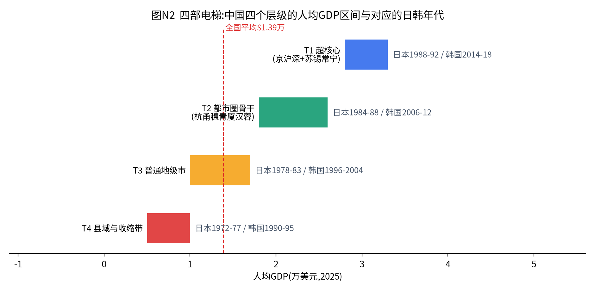
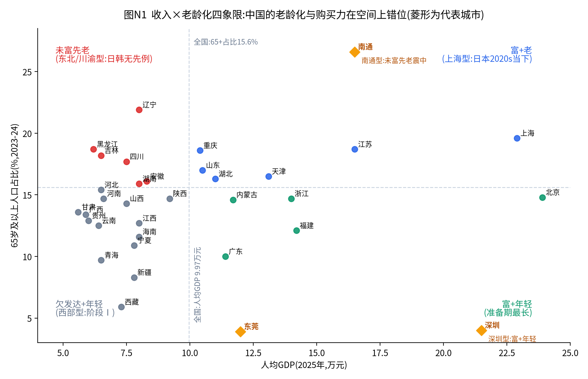
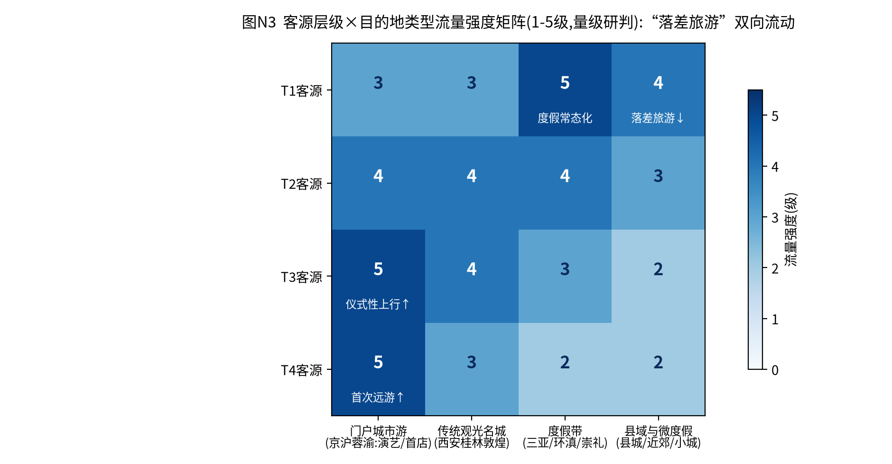
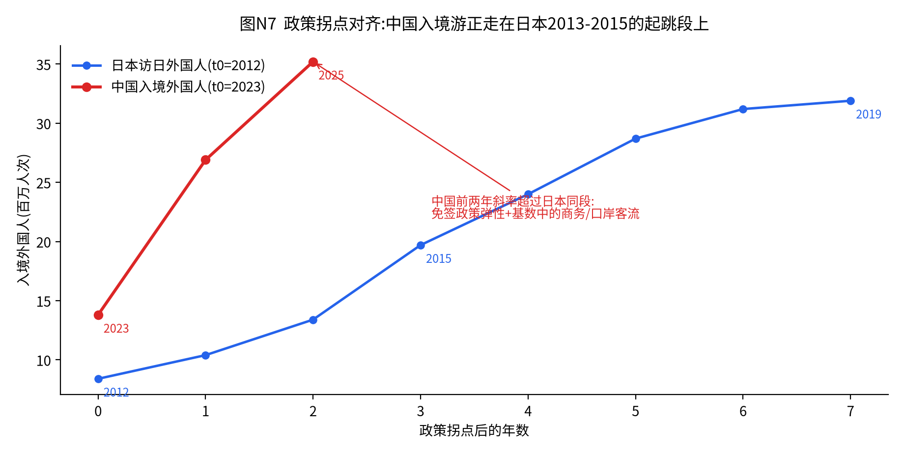
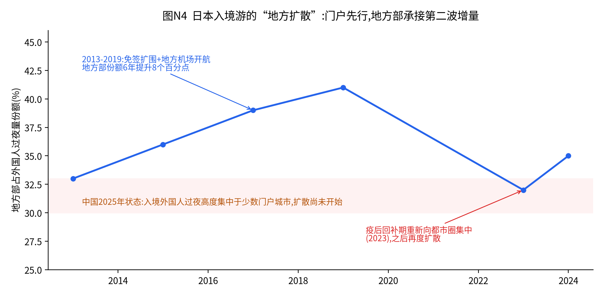
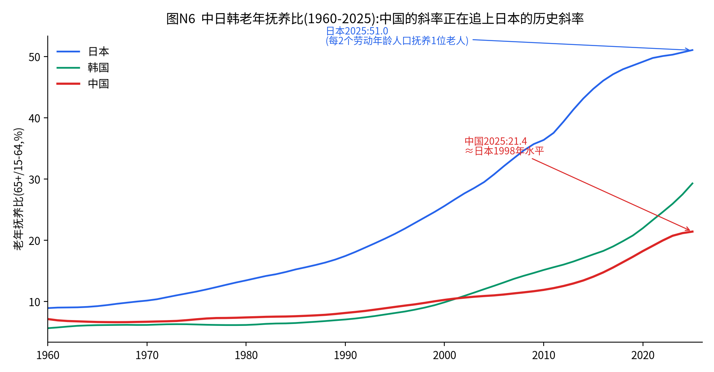
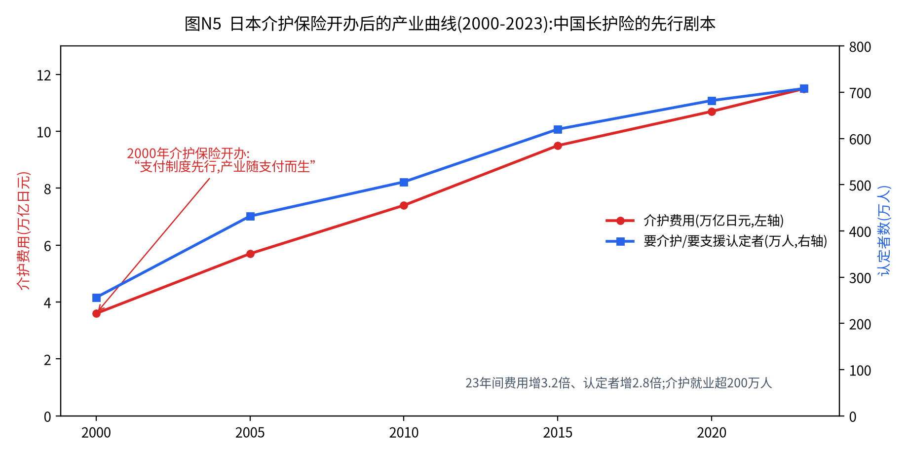

不采用商业机构"一线/新一线"的流量口径,而以三个可量化维度定层:①人均GDP(2025年公报);②常住人口净流入/流出(第七次普查至今);③65岁以上人口占比。层级的本质是"城市在国家人口与资本循环中的位置",不是行政级别。


| 阶段定位 | 人均GDP 20-24万元($2.8-3.3万,北京23.9/上海22.8/无锡22.3/深圳21.5/苏州21.2)≈日本1988-92、韩国2014-18;消费已进入"体验与意义"阶段 |
| 消费/零售窗口 | 第四消费时代特征显性:二手、谷子、citywalk、为情绪付费;会员店/折扣店与高端并存,中间带塌陷最严重;首店经济与"策展型零售"是购物中心存活公式 |
| 房产阶段 | 二手房交易占比已超六成(≈日本存量结构);城市更新、非住宅资产(长租、养老、数据中心)REITs主场 |
| 文旅角色 | 最大客源地(出境游、度假、下沉"落差旅游"发起端)+入境游门户(承接入境消费大头)+演艺赛事中心 |
| 银发阶段 | 上海型"富+老":高端养老社区、认知症照护、银发消费升级(旅居/健身/抗衰)最先成熟;对标日本2015-2020 |
| 政策与投资重点 | 城市更新、TOD站城一体、入境游便利化、托育与养老设施补短板 |
| 阶段定位 | 人均GDP 13-19万元($1.8-2.6万,杭州18.1/广州16.8/青岛16.7)≈日本1984-88、韩国2006-12;升级期主力战场 |
| 消费/零售窗口 | 品牌化与中产化进行时:中端酒店、会员店、新能源车升级、亲子与研学消费的最大市场;购物中心存量竞争开始 |
| 房产阶段 | 新房与二手并重;都市圈内强分化(核心区改善vs远郊库存);城中村改造主战场 |
| 文旅角色 | 国内长线客源主力+区域文旅门户(演唱会经济、赛事、暑期亲子);入境游"第二落点"候选(成都、杭州、青岛、厦门) |
| 银发阶段 | ≈日本2005-10:普惠机构连锁化、社区嵌入式(日托+上门)起步;适老化改造市场启动 |
| 政策与投资重点 | 都市圈轨道、产业升级(新能源、生物医药)、入境游承接基础设施(航线、支付、多语种) |
| 阶段定位 | 人均GDP 7-12万元($1-1.7万)≈日本1978-83、韩国1996-2004;大众消费后段+首轮品牌升级 |
| 消费/零售窗口 | 连锁品牌下沉的当前前线(茶饮、快餐、酒店、零食折扣已打穿;中端酒店、会员制、新式商业体正在进入);"县城中产"是近5年最大边际消费群体 |
| 房产阶段 | 普遍供大于求,去库存与保交付;人口流出型城市房价长期承压(对照日本地方城市1990s后) |
| 文旅角色 | 客源快速增长(高铁带来"首次远游"红利)+黑马目的地池(淄博、天水式爆红多发生在此层) |
| 银发阶段 | ≈日本1995-2000(制度前夜):长护险扩面的最大弹性市场;公建民营、县医院康复科转型 |
| 政策与投资重点 | 存量基建维护、公共服务均等化、承接产业转移;严控新增新城 |
| 阶段定位 | 人均GDP <7万元(<$1万,甘肃全省5.6万元)≈日本1972-77、韩国1990-95;大众消费普及尾声,但叠加人口流出与老龄化——日本1975年没有的变量:年轻人已经走了 |
| 消费/零售窗口 | 数字拉平效应最强(拼多多/抖音直达);品牌首购与婚庆、节庆脉冲消费;返乡经济(春节消费脉冲全国最强) |
| 房产阶段 | 自建房+县城商品房过剩;收缩城市进入"负动产"前夜,需精明收缩规划 |
| 文旅角色 | 微度假目的地(近郊、乡村游)+少数特色黑马(村超、民俗IP);承接"落差旅游"下行流量 |
| 银发阶段 | 未富先老最严重、子女外流:互助养老、幸福院、乡镇卫生院医养结合为主形态;按韩国剧本推演支付天花板 |
| 政策与投资重点 | 县域城镇化(就地城镇化最后窗口)、农村养老兜底、设施减量与集中 |
| 维度 | T1 超核心 | T2 都市圈骨干 | T3 普通地级市 | T4 县域与收缩带 |
|---|---|---|---|---|
| 消费观念 | 第四消费时代:意义、二手、体验 | 品牌化与品质升级进行时 | 首轮品牌升级+性价比主导 | 普及型消费+数字拉平脉冲 |
| 教育 | 简历军备+国际化+素质化 | 学区竞争最激烈层 | 县中振兴与职教分流焦虑 | 教育移民(送娃进城)持续抽空 |
| 娱乐内容 | 演出/展览/沉浸式;内容生产端 | 演唱会经济主战场 | 影院/剧本杀下沉尾声;短视频主导 | 短视频与直播几乎唯一媒介 |
| 汽车 | 保有饱和;换购+高端电动 | 增换购主力;渗透率决胜层 | 首购+低价电动下沉前线 | 微型电动车/老头乐规范化 |
| 住房 | 存量时代;更新与REITs | 新旧并重;城中村改造 | 去库存;分化承压 | 过剩+收缩;精明收缩 |
| 商业零售 | 策展型商业+会员店+即时零售 | 购物中心竞争+会员店进入 | 连锁下沉前线;折扣打穿 | 电商+集市;品牌首店脉冲 |
| 文旅 | 客源发起端+入境门户 | 区域门户+亲子研学 | 首次远游客源+黑马池 | 微度假+乡村游目的地 |
| 银发 | 高端市场化(日本2015-20) | 普惠连锁起步(日本2005-10) | 长护险弹性市场(日本1995-2000) | 兜底+互助(韩国农村剧本) |
| 政府投资 | 更新+轨道+入境便利化 | 都市圈基建+产业升级 | 维护化+公共服务均等 | 兜底+减量整合 |
①跨层流动:中国有约3亿农民工与4亿级的跨层人口流动,消费在层间转移:县城人到省会买车、二线人到上海看演唱会跟着飞一次"首店"、一线人下县城找松弛感。日韩是"整国一部电梯",中国是"四部电梯同时运行且乘客在换乘"——任何单层市场规模测算若不计跨层流入流出都会失真。②数字拉平:拼多多、抖音、美团使T4消费者与T1同时看到同一商品与生活方式,"业态时滞"在标品上被压缩到零,但在服务与体验(酒店、医疗、养老、演出)上依然存在——数字拉得平商品,拉不平服务。这是"时间机器"策略仍然成立的原因,也是它只对服务业成立的原因。
| 业态/行业 | T1 | T2 | T3 | T4 | 时滞规律 |
|---|---|---|---|---|---|
| 购物中心 | 过剩出清 | 存量竞争 | 少量补空白 | 不适配 | T1→T3约8-10年;窗口已基本关闭 |
| 中端连锁酒店 | 升级生活方式 | 主窗口 | 正在打开 | 经济型翻牌 | T1→T3约6-8年;当前最佳下沉标的 |
| 会员店/硬折扣 | 验证完成 | 主窗口 | 折扣店已打穿 | 量贩零食覆盖 | 折扣业态被数字拉平加速,时滞仅3-5年 |
| 连锁餐饮茶饮 | 饱和内卷 | 饱和临近 | 前线 | 最后增量 | 时滞已被加盟模式压到2-3年 |
| 养老服务 | 高端市场化启动 | 普惠连锁起步 | 随长护险扩面 | 兜底型 | 服务业时滞完整保留,约8-10年/层 |
| 演出/体验业态 | 成熟 | 主窗口(演唱会经济) | 巡演下沉开始 | 节庆化 | 约4-6年/层 |
| 即时零售 | 成熟 | 成熟 | 渗透中 | 密度不足 | 受配送密度约束,T4难以打穿 |
文旅消费发生在异地,单城市分析必然失真。本章建立"客源层级×目的地类型"矩阵(图N3),核心论点:中国文旅最大的结构性红利是四层之间的"落差旅游"——高层级向下寻找松弛与低价(县域游、反向旅游),低层级向上寻找见识与仪式感(省会游、京沪游、演唱会专程游)。日韩单层社会没有内生落差,只能靠出境/入境制造落差;中国把"出境游的功能"部分内化在了国境之内。这解释了为何在收入预期偏弱的2025年,国内出游人次仍增长16.2%、农村居民出游增长22.6%。

| 客源层 | 阶段画像(日韩对照) | 运营对策要点 |
|---|---|---|
| T1 | 出游率与日本1990年前后相当;出境游主力恢复;"反向旅游/平替游"=日本90年代"安近短"的提前上演;为情绪价值与内容付费意愿最强 | 产品做"人设"不做"景点":松弛感、小众感、可发圈性;高频微度假会员化(对照日本私铁沿线度假会员制);警惕对T1客群堆硬件 |
| T2 | 国内长线主力+首次出境窗口(对照日本1985-90出境从495万→1,100万的起跳段);亲子、研学预算最厚 | 暑期与节假日产能管理是利润关键;亲子内容化(课程、IP、营地);出境游产品的"首次出境"引导设计 |
| T3/T4 | 高铁"首次远游"红利释放中(对照日本1970大阪世博+Discover Japan引爆的国民旅游时代);仪式性出游(婚庆、毕业、进香、看升旗)占比高 | 大交通接驳与"一价全包"降低决策门槛;拼团与熟人分销(短视频+本地团长)是最有效渠道;价格锚点敏感,主打"值回票价" |
城市本身成为最大景区:演艺、赛事、首店、博物馆构成"内容组合拳"。日本经验:东京大阪承接了访日消费的绝对大头,但运营重心在"二次到访理由"的持续制造(涩谷再开发、teamLab、丰洲市场)——门户城市的KPI不是首访率而是复访率。中国对策:京沪蓉渝的演唱会/赛事档期统筹(避免同周期挤兑酒店)、大型演出的"跨城观演"配套(高铁联票+住宿打包)、入境客的"48小时城市玩法"标准化产品。
三亚↔冲绳:冲绳证明"本币度假天堂"可以承接本国出境替代需求(年游客约1,000万,其中本国客占八成以上),关键在航空运力+酒店梯队(从民宿到奢牌全谱系)+海岛内容更新;三亚的短板是淡旺季极端分化与性价比口碑,应学冲绳的"淡季会奖(MICE)+银发旅居"填谷策略。崇礼↔新潟/长野滑雪带:日本泡沫期滑雪场从700家过剩到大量破产,2010年代靠入境滑雪客(妙高、白马、二世谷模式:外资运营+粉雪品牌+四季化)复活——崇礼应提前布局四季化(夏季山地度假)与入境滑雪营销,避免重走"国内客单一依赖"的过山车。济州的反面:过度依赖免税+博彩+单一客源(中国团客),政策一变即崩,警示海南离岛免税不能替代度假内容本身。
日本由布院(汤布院)用30年从无名温泉村做成顶级小镇,机制是"在地共同体主导":拒绝大资本大巴团、控制建筑尺度、本地业者联盟定价自律、以《由布院音乐节》等在地内容维持调性。濑户内国际艺术祭用三年一届的艺术内容把衰退海岛做成全球目的地,本质是"内容策展+慢交通"。中国淄博、天水式爆红是"流量+政府快速响应"的短周期模型,缺的是在地业者共同体与内容自生产机制;建议黑马县市在爆红后6个月内完成:①业者联盟与价格自律机制;②一个可年更的在地内容IP(节/赛/集);③过夜产品补短板(民宿集群标准化)。否则18个月热度衰减是日韩经验的普遍规律。


两张图合起来读:①中国入境外国人2023-25年从约1,378万增至3,517万,政策拐点后前两年的斜率超过日本2013-2015同段(免签扩容弹性+口岸/商务客流基数),2025年入境总花费1,311亿美元(+39.2%);②日本的第二波增量来自"地方扩散"——地方部占外国人过夜份额从2013年33%升至2019年41%,靠的是地方机场国际航线、免税店扩围(2014年制度改革后免税店数量五年增四倍)、JNTO与地方DMO的分工营销。中国当前入境消费高度集中于京沪蓉渝深等门户,地方扩散尚未开始=最确定的下一波。
| 层级 | 酒店供给判断 | 文旅资产运营要点 |
|---|---|---|
| T1 | 中高端存量竞争;生活方式/奢华细分仍有缺口(对照东京安缦、虹夕诺雅东京的溢价) | 城市更新型文旅(工业遗存、历史街区)运营权>产权;演艺场馆档期经济 |
| T2 | 中端连锁主窗口;会展与演唱会档期驱动RevPAR波动加大,收益管理能力成胜负手 | 亲子/研学基地内容年更;都市近郊微度假(2小时圈)是最佳资产类型 |
| T3 | 经济型翻牌中端为主;警惕爆红城市的酒店投资追高(淄博后周期供给过剩已现) | 黑马机制三件套(见3.3);存量文旅项目(古镇、乐园)以运营托管盘活,拒绝新增重资产 |
| T4 | 民宿集群+连锁经济型,严控体量 | 乡村游以"农文旅+集体经济"轻模式;拒绝人造景区(风险极高) |
| 主题 | 未来5-10年重点 | 对标 |
|---|---|---|
| 入境游 | 门户城市48小时产品、离境退税扩围、第二落点线路、地方DMO、IP场景地营销 | 日本2013-2019 |
| 容量管理 | 热门目的地宿泊税/预约制/分流;KPI改为过夜率与人均二消 | 京都治理工具箱 |
| 度假带 | 三亚淡季填谷(MICE+旅居);崇礼四季化+入境滑雪;海南免税与内容再平衡 | 冲绳/妙高/济州(反面) |
| 县域黑马 | 爆红后6个月机制化(业者联盟/年更IP/过夜产品) | 由布院/濑户内 |
| 酒店 | T2-T3中端连锁化;收益管理;存量翻牌优先于新建 | 东横INN/星野分层打法 |
| 银发文旅 | 详见第五章交叉专题 | Club Tourism |
银发经济不是一个市场,而是"三代老人"的三个市场:活力老人(60-70岁,消费型)、中龄老人(70-80岁,服务型)、失能失智老人(80+为主,照护型)。中国的结构性机会在于:1962-1975年婴儿潮(年均出生约2,500万,中国史上最大出生队列)正批量进入活力段——这一代人赶上了房改(有资产)、增长期(有养老金与积蓄)、移动互联网(有数字能力),是中国史上最有消费能力的老年队列。照护需求高峰将在2035年后(婴儿潮进入75+)到来。顺序结论:先消费、后照护——未来10年布局银发消费与轻服务,2030年代布局重度照护,与日本"1990s银发消费先行、2000s介护产业成型"的顺序一致。


| 节点 | 内容 | 产业效应 |
|---|---|---|
| 1989 黄金计划 | 十年养老基础设施国家计划(特养床位、居家服务站) | 政府先铺供给底盘 |
| 1997立法/2000实施 介护保险 | 40岁以上全民缴费、按失能等级给付、服务定价国家统一、供给放开给民企 | 产业从零到10万亿日元级、就业超200万;日医学馆、Benesse、SOMPO等连锁巨头诞生 |
| 2005/2014 两轮改革 | 向"预防+居家+小规模多机能"倾斜,压机构费用 | 社区嵌入式业态(日托、上门、短住一体)成为主流形态 |
| 2010s-20s | 认知症国家战略(新橙色计划)、介护机器人补贴、开放外国护理人力 | 科技照护与人力替代成为新增长点 |
日本"失去的三十年"里逆势增长的消费公司,大半做的是老人生意:Curves(女性30分钟环形健身,会员平均年龄60+,门店近2,000家);永旺G.G Mall(55+专门购物中心,早晨4点开门晨练、店内血压站与老年瑜伽,把"到店频次"做成护城河);便利店适老化(罗森与介护企业合办"照护咨询便利店"、小份餐与软食);介护食品(JAS统一标准的"易咀嚼食品"市场化);《ハルメク》(50+女性杂志,纸媒寒冬中发行量逆势翻倍,靠"读者共创+直营电商"模式)。共同公式:不做"老人专用"标签(老人拒绝被标签化),而做"恰好适老"的普通消费。
韩国2008年推出老人长期疗养保险(晚日本8年,同样立竿见影催生产业),但其更大的"贡献"是预警:韩国老人贫困率约40%(OECD最高)、老人就业率OECD最高——养老金制度成熟之前社会就变老了,老人被迫再就业(保安、快递、清洁),"银发经济"在韩国首先是"银发就业经济"。中国的养老金结构是分裂的:机关事业单位与企业职工尚可,而城乡居民养老保险月均不足250元——县域与农村老人的支付结构更接近韩国而非日本。结论:T4银发经济的主形态必然是"低支付+政府兜底+互助组织+银发就业",市场化机构养老在县域没有支付基础;反过来,"银发人力资源服务"(低龄老人再就业匹配)在中国会像韩国一样成为一个真实行业。
| 层级 | 阶段(日本坐标) | 主力业态 | 支付来源结构 |
|---|---|---|---|
| T1(上海型:富+老) | 2015-2020 | 保险系CCRC与高端社区、认知症照护(最大缺口)、银发消费升级(旅居/健身/抗衰/宠物)、适老化家装 | 个人资产+商业保险+长护险,市场化程度最高 |
| T2 | 2005-2010 | 普惠机构连锁化、社区嵌入式(日托+上门+短住,对标日本小规模多机能)、老年大学与文体消费 | 养老金+子女补贴+长护险扩面,普惠定价<6,000元/月为主流带 |
| T3(含南通/东北型) | 1995-2000(制度前夜) | 长护险扩面最大弹性市场;公办民营改造、县医院康复/护理院转型、乡镇辐射型上门服务 | 长护险+财政购买服务为主;"未富先老"城市优先获得政策倾斜 |
| T4 | 无日本先例,按韩国农村剧本 | 互助养老(时间银行)、幸福院、卫生院医养结合、银发就业匹配、"老漂回流"承接 | 财政兜底+集体经济+家庭;商业模式必须近零边际成本 |
| 情景 | 制度设计 | 对产业的含义 |
|---|---|---|
| 快线(概率中) | "十五五"内全国制度化,独立险种、单位个人财政三方筹资,筹资水平接近试点上限(人均年百元级) | 复制日本2000-2010:居家上门与日托连锁迎来十年高增长;护理人力缺口(当前口径数百万级)成最大瓶颈,职业教育与人力派遣先受益 |
| 基准(概率高) | 渐进扩面:从职工医保参保人向居民延伸,给付以居家与现金补贴为主、机构为辅 | 产业斜率温和;社区嵌入式与适老化改造先行,重资产机构养老继续依赖T1自费市场 |
| 慢线(概率低) | 长期停留于试点扩围,筹资依赖医保结余划转 | 照护产业化推迟,家庭照护+非正规市场(住家保姆)持续主导;银发消费不受影响,仍按窗口期推进 |
判断依据:日本从立法(1997)到实施(2000)用3年,韩国从立法(2007)到实施(2008)用1年;中国试点已9年(2016年15城起步、已扩至49城),制度要件(评估标准全国统一等)正在收敛——基准情景为大概率,快线取决于财政与人口压力的倒逼强度。
| 主题 | 重点关注 | 对标 |
|---|---|---|
| 银发消费(未来10年主窗口) | "恰好适老"的普通消费改造(零售动线、小份餐、字体与界面);银发健身与抗衰;宠物与陪伴;50+女性媒体电商 | 永旺G.G/Curves/ハルメク |
| 照护服务 | 长护险节奏(4.5三情景);社区嵌入式连锁;认知症照护(T1最大缺口);护理人力职教与派遣 | 日本介护保险产业史 |
| 科技照护 | 照护机器人与监测IoT(日本补贴目录模式);AI陪伴;适老化智能家居 | 日本2010s-20s |
| 银发就业 | 低龄老人再就业匹配平台;返聘与灵活用工合规 | 韩国(预警转机会) |
| 养老金融(简项) | 个人养老金账户扩面与默认投资机制;商业长护/年金险;以房养老在中国大概率复制日本的低渗透(住房情结+产权顾虑),不宜高估 | 日本iDeCo/NISA路径 |
三亚每年承接数十万至百万级北方越冬候鸟老人,西双版纳、巴马、威海(夏季)构成全国候鸟网络——这一规模全球独有(美国雪鸟Sun City、日本冲绳移居均为万级)。其经济本质是"用T4-T2的养老金购买T1级气候资产",是落差逻辑在银发市场的延伸。当前痛点即运营机会:①异地医保结算与慢病续方(政策已通,服务未跟);②"地产候鸟"向"服务候鸟"转型——过去卖房,未来卖"旅居会员+医疗托底+社群运营"的组合(对照日本会员制度假的经验与其预收资金监管教训);③淡旺季极端分化,反向填谷(夏季三亚做东南亚入境+会展)是酒店层面的确定性动作。
Club Tourism(近铁系)是日本最大银发旅行社,模式三支柱:①会员制+纸质会刊(《旅の友》月发行数百万份,精准触达不上网的70+);②"主题×小团"产品工厂(摄影团、花见团、巡礼团、单人参加专线),把兴趣社群变成复购;③志愿者领队体系(活力老人服务中龄老人,既降成本又是会员黏性)。汤治(温泉疗养)现代化:把传统长住温泉疗养包装为"健康增进型旅居",与保险和企业健康管理挂钩。对中国:银发旅游当前仍以低价购物团与子女代订为主,Club Tourism式"兴趣社群+会员制+适老服务标准"的空位巨大;老年大学(在校超2,000万人,全球最大银发教育体系)是天然的获客与社群入口——"老年大学+研学旅居"的'游学养'融合产品,是文旅与银发两个万亿市场的交叉点上最具确定性的新品类。
| 产品 | 关键动作 | 风险提示 |
|---|---|---|
| 候鸟旅居 | 医保结算+慢病管理托底;旅居会员制替代卖房;社群运营(候鸟社区自组织) | 预收资金监管(日本教训);医疗责任边界 |
| 银发跟团游 | 适老服务标准(节奏、医疗随队、单人友好);兴趣主题化;纸质触点不可省 | 低价购物团模式的口碑反噬 |
| 游学养 | 老年大学合作获客;"课程+旅居"打包;代际产品(祖孙营) | 师资与内容年更能力 |
| 温泉/康养度假 | 健康管理挂钩(体检+疗程);淡季长住定价 | 医疗宣称合规 |
| 层级 | 文旅角色与动作 | 银发角色与动作 | 总体投资/运营基调 |
|---|---|---|---|
| T1 | 入境门户(48小时产品、退税、演艺档期);客源发起端(会员化微度假) | 高端市场化+认知症缺口;银发消费升级主场 | 存量更新与运营权,拒绝新增重资产 |
| T2 | 入境第二落点;演唱会经济;亲子研学产能管理 | 普惠连锁与社区嵌入式起步;老年大学网络 | 升级窗口期,中端连锁与服务连锁的黄金层 |
| T3 | 黑马机制化(联盟/IP/过夜);首次远游客源承接 | 长护险扩面最大弹性;公办民营改造 | 轻资产运营托管;严防爆红追高 |
| T4 | 微度假与乡村游轻模式;承接落差旅游 | 兜底+互助+银发就业(韩国剧本) | 近零边际成本模式;精明收缩 |
"一个中国、四个时代"不是修辞,而是运营手册的第一页:同一个品牌、同一类资产、同一项政策,在四个层级需要四套打法。文旅的答案是把落差变成产品,银发的答案是把窗口排成时序——活力老人的消费黄金十年就在眼前,照护的产业化等待长护险发令枪,而这两件事在"候鸟旅居"与"游学养"上交汇。日本用三十年停滞期证明了银发与文旅是仅有的两条向上曲线;中国的不同在于,我们在收入尚在爬坡时就要同时经营这两条曲线——这既是"未富先老"的代价,也是后发者拿着完整剧本入场的优势。
口径说明:标注"约"或"整理约数"的数字用于刻画量级与趋势;图N3客流矩阵为基于OTA公开数据、交通客流与文旅部抽样的量级研判(1-5级),不代表精确客流统计;各城市65+占比存在常住/户籍口径差异,文中已分别标注。